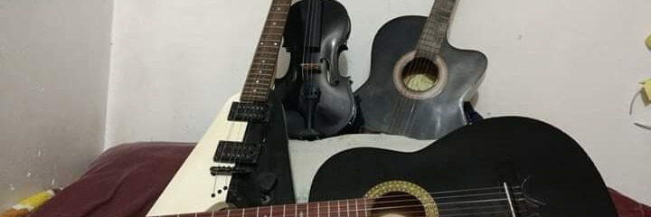

Aquí hablaremos sobre mi desarrollo en platzi
-
De manera proporcional a mi progreso en la carrera de Desarrollador
Web, me enconraré realizando actualizaciones a esta genial página
-
En este blogpost, el cual espero evolucione en una WebApp, estaré
subiendo contenido personal y de mi agrado
- Aqui encontrarás fotos sobre mi hija "Nany"
 Aquí estamos mi hija y yo.
Aquí estamos mi hija y yo.
- Ellá jugando en la moto
- Tambien subire un poco sobre la musica en mi vida

Estos son los instrumentos que tengo
Las actualizaciones continuaran sin previo aviso, coma frutas y
verduras.